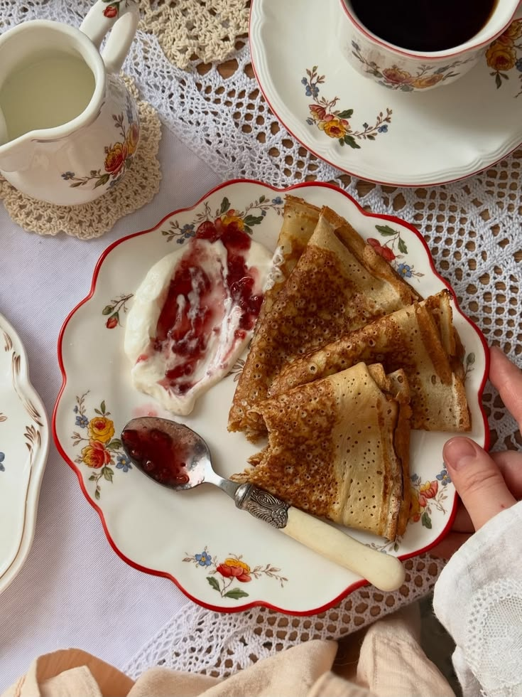
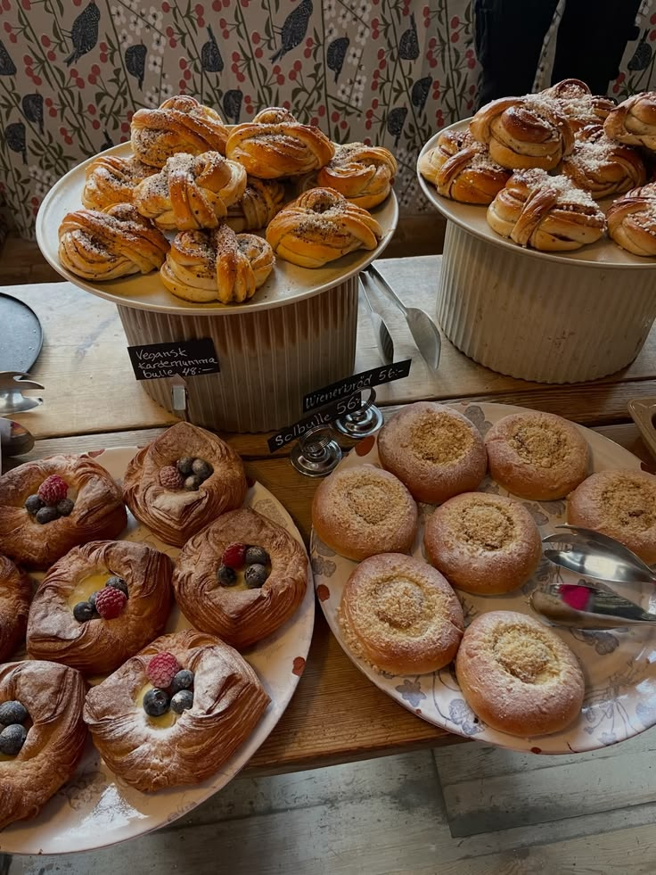
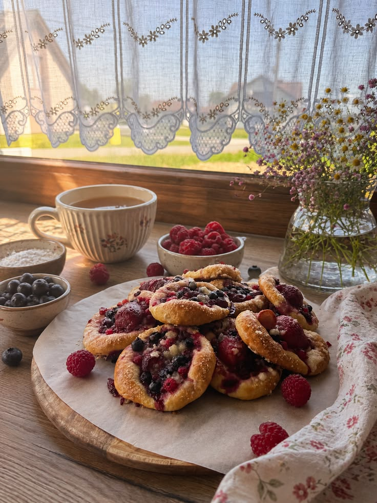

lunch
Dagens lunch hittar du hos oss varje dag, från måndag till lördag, Allt från soppluncher, sallader,
mackor; och på fredagar bjuder vi alltid på pannkakstårta för det små (och äldre såklart!).
Varje dag mellan 11.00-13.00

fika buffe
Frossa i vår omtalade fika-buffé; kakor, bakelser, tårtor, bullar, kaffe, thé, jordgubbssaft, jaa, allt
du kan tänka dig och lite därtill!
Fredag: 13.00-16.00
Lördag: 13.00- 15.00

hembakat
Med hembakat från hjärtat bjuder vi på en smak av barndomens somrar,
varma kök och gamla, kära traditioner.
Hos oss lever de små stunderna kvar.